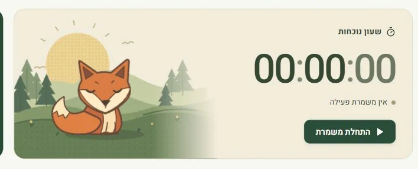

יומן משמרות אישי · דמו באתר הפעיל
שועון
יומן אישי לעובדים לפי שעה, מתכנון המשמרות ועד אומדן השכר.
- אפשר להפעיל שעון משמרת ולתעד שעות עבודה והפסקות.
- לוח השנה מציג משמרות מתוכננות ואת רישום המשמרות שעבדתם.
- תצוגת השכר כוללת אומדן ברוטו, נטו ושעות נוספות.
הדמו נפתח בחלון נפרד ופועל על נתוני דוגמה, ללא התחברות. האומדן אינו תלוש שכר.
לפתיחת הדמו ↗